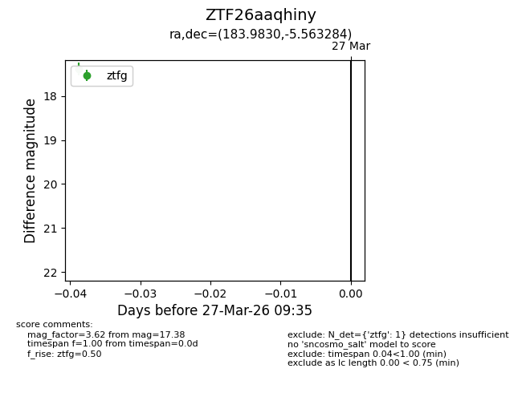
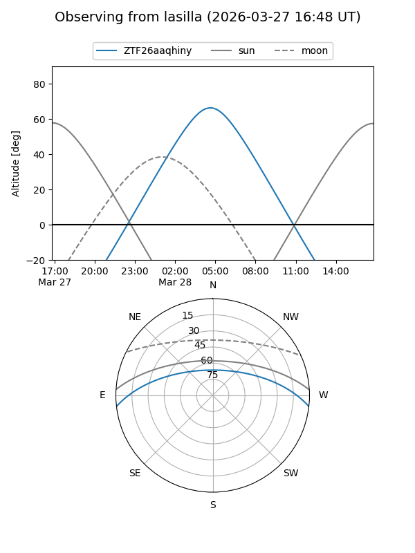
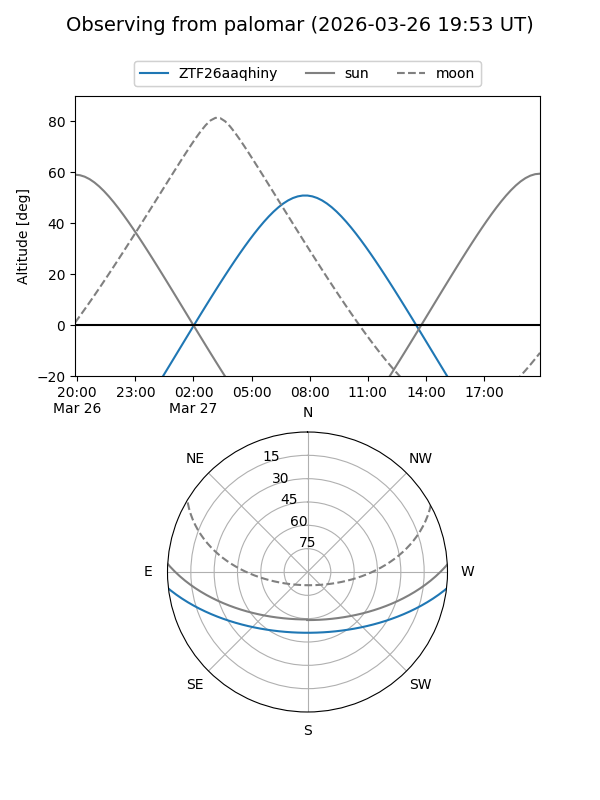

ZTF26aaqhiny
Target ZTF26aaqhiny at 2026-03-27 09:38
Aliases and brokers:
FINK: link
Lasair: link
ALeRCE: link
alt names
ZTF26aaqhiny (ztf,fink_ztf)
Coordinates:
equatorial (ra, dec) = 183.9830,-5.56328
equatorial (HMS+DMS) = 12:15:55.92,-05:33:47.82
galactic (l, b) = (286.9061,+56.19971)
Flags:
Photometry:
last ztfg=17.38
1 ztfg detections
Lightcurve

Visibility


Additional plots